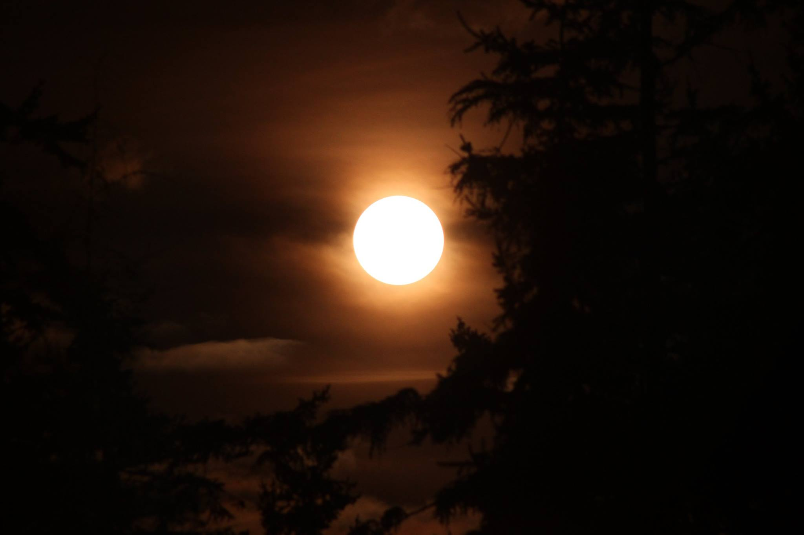
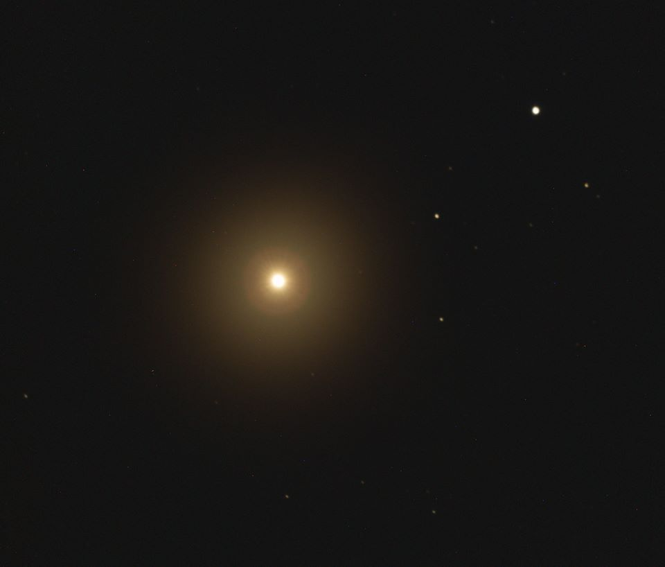

I admit it. I have a love for stars. As an astrophotographer, I have many targets I can choose from on any given night, and there is so much beauty in the universe, it is a hard decision. But I have always had a fascination with stars. They are, after all, the home of planets and the destination of explorers. With this book, I am attempting to convey some of that fascination. I hope you enjoy.
All pictures in this book are original works of the author taken at Starmaker Observatory located on Camano Island in Washington State, USA.
intro

the sun description.

stats: type: K0 III orange giant age: 6-8.5 billion years old magnitude: -0.04 absolute magnitude: -0.30 mass: 1.08 +-0.06 solar masses metallicity: 17-32% Sol population: Population II distance: 36.7 ly +-2.3 ly constellation: Bootes other names: Alpha Bootis
intro: Arcturus is the brightest star in the northern hemisphere.
location: Close to earth. Nearby stars include Eta Bootis (3.3 ly). It is moving rapidly towards earth (proper motion = 2 arc seconds per year). It is part of a group of 52 stars that appear to be moving together known as the Arcturus stream.
history: Arcturus is currently in the late stages of the main sequence. It has likely exhausted all its hydrogen fuel and is in hydrogen shell burning phase. It has expanded into a giant star and is likely to continue expanding as it ages and dies.
planets: Some early indications exist that a planet 12 times the mass of Jupiter may exist 1.1 astronomical units from the star, within the habitable zone. But this is debated and not confirmed.
future: Arcturus has likely already begun fusing helium into oxygen and carbon in its core. This stage occurs after most of the hydrogen fuel has been consumned and leads to a swelling or expansion of the star into a giant star.
As an aging star, Arcturus exhibits very little instability. “Star quakes” have been deteced on the order of microseconds to a few seconds at most. This is common in red giants as they age. The surface of the star actually vibrates creating short-scale variations it the spectral signature. As the star ages towards the M class of stars, it’s variability and thus its instability will increase.
After its helium supply is exhausted, it will expand further, eject its outer shells of gas, and become a white dwarf star inside a planetary nebula.